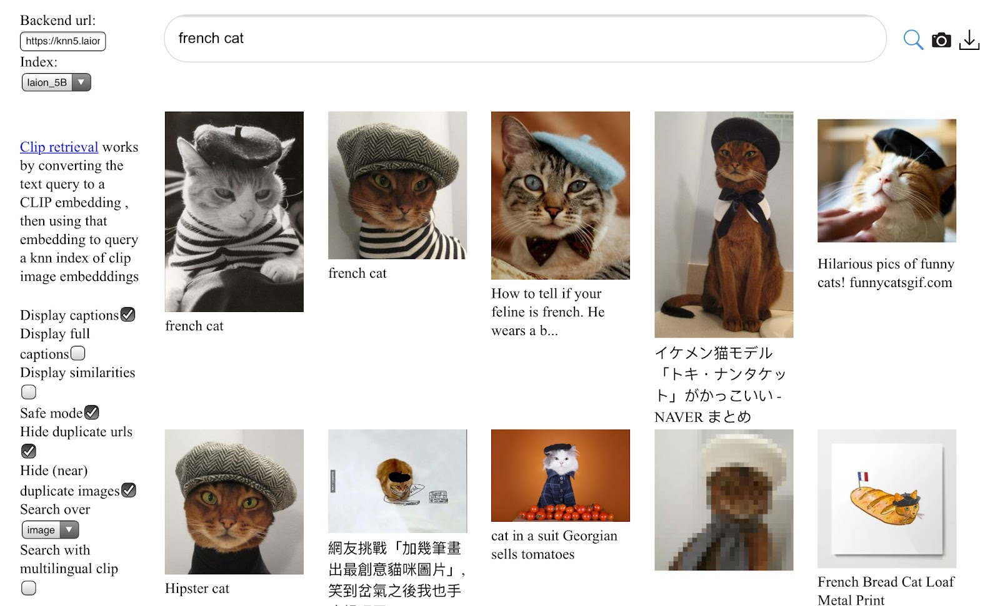

If you’ve seen the recent TikTok trend transforming people into historical versions of themselves1, or had a conversation with the chatbot, ChatGPT, you’ve interacted with generative AI. These impressive capabilities are driven by a comparable explosion of available data on the web. If you’ve ever written anything online or posted a photo, your data can become part of training data for these generative models. This might not feel so different from how companies and websites already collect and train on your data, but the way generative models are trained means your data can be memorized and re-generated by generative models in new contexts. That’s because generative AI models are trained to exactly reproduce their training data. If the sentence “Mary had a little lamb” were in the training data, then the model would get a higher reward for choosing “lamb” after it sees “Mary had a little” than any other word (even though Mary probably also had other farm animals!). 2
The direct impact training data has on generations makes training data design the most important set of choices model creators have to reduce the risk of copyright and privacy infringements of the resulting, generative model. 3 To put it bluntly, it’s really hard to generate infringing content if none of your training data is copyrighted or private. However, the sheer amount of data required for modern-day model training makes it impossible for dataset curators to interact with each item in the dataset and thus impossible to know exactly the content, source, and context of each item in the dataset.
In this essay, we discuss datasets of the not-so-distant past (the late 1990s and early 2000s) and how datasets and dataset collection practices have changed. Then, we discuss what the choices data curators make to create modern-day, generative-AI datasets. Finally, TODO
tl;dr
- Training data design has a direct impact on the capabilities of models trained on that data and can impact privacy and copyright concerns.
- Because modern generative AI models value quantity over quality, and models require large amounts of compute, dataset collectors are often limited in their ability to evaluate the results of these choices.
- Thus, dataset collectors make many choices on intuition.
- However, dataset curators could be more cognizant of the choices they make.
Early datasets (pre-2010) were much smaller, had more dense annotations, and required manual curation.
We’ll start our story with one of the first dataset machine learning students learn about: MNIST. 4 First released in 1999, the dataset was built by Mixing NIST’s datasets of handwritten numbers and contained only 60,000 examples in the training set. As a point of reference, LAION-5B, an image dataset made in 2022, has 5.85 billion text-image pairs. All the digits in MNIST were written by either high school students or employees at the US Census Bureau and compiled by NIST–dataset creators knew where the data was from and how it was collected. The data in MNIST is rather uniform: all data are 32x32 pixels large, presented in black-and-white, and the digits are roughly centered in the image.

Since MNIST has a long history, it has been incredibly well-studied. A quick Google Scholar search of MNIST returned 76,900 results. 5 MNIST is so well studied, that we know exactly which examples are labeled incorrectly [Todo, find the citation]. In contrast, modern datasets are entirely different. For instance, the LAION captions may not accurately describe the content of the image and could even be written in multiple languages. Given the massive size of these datasets, it is unfeasible for anyone to identify potentially mislabeled or misleadingly labeled images, let alone understand why they might be labeled that way.
Unlike both MNIST and LAION, early-language datasets were densely annotated and focused on using linguistic structure to parse text. 6 That’s because early work in AI assumed that building a language system would simply involve encoding this type of grammatical and contextual knowledge and mechanically applying it. For example, WordNet is a dataset originally from the 1990s was entirely manually created and curated over the course of ten years (starting in 1985 and first released in 1995). PennTreebank, another dataset from that era (1995) was contains about 1M words. Both of those datasets are small compared with present day language datasets. The current version of WordNet (v3.0, released in 2006)7 is a, compressed, 10.5MB, PennTreebank is XX, and the Pile, released in 20208, is 800GB.
However today’s language models, just like today’s image models, use much fewer annotations and rely on computational power to discover statistical patterns in the text. This was driven by the growth of the internet, a decrease in computer storage costs and computational cost (compute), and a growing interest from organizations like NIST, DARPA, and XX. First, text data in digital form became much more available due to the rise of the internet. Data sets such as Sam Roweis’ 20 Newsgroups took advantage of pre-web text forums. Second, shared evaluations allowed expensive annotated datasets to be created and distributed. This trend was led particularly by NIST in Information Retrieval through the Text REtrieval Conference (TREC)9 and related conferences and by the Linguistic Data Consortium (LDC) who curated collections like PennTreeBank which contained a collection of thousands of stories fron the Wall Street Journal annotated for linguistic properties like parts-of-speech, and disfluency10. These collections emphasized linguistic annotations such as parse trees or relevance judgments. Third, the growth of online activity provided compelling operational use cases for data-driven statistical models. Internet search supercharged information retrieval research, and spam classification proved a watershed in the impact of ML-based classifiers. Additionally, the decrease in compute costs enabled larger models to process the now larger datasets.
Still, collections remained small and special-purpose. Collection sizes tended to be in the thousands and tens of thousands of documents. Collections were built to support specific applications, and the focus remained on annotations as the key value. While “unlabeled” text began to be more readily available, it was difficult to show that it had any real value beyond smaller, supervised datasets. As a result, data work tended to focus on layering annotations on existing documents, most notably the PennTreeBank articles. Language datasets of that time were reflective of both the technical limitations of the computers and systems that researchers ran, and model design. At the time, natural language models were similarly hand-designed, and relied on features like XX that XX. For instance, IBM’s Watson (developed in 2011) explicitly parsed sentences into linguistic components then used hand-designed features to win at Jeopardy. Up until 2016, Google Translate similarly used phrase-based translation which broke sentences into linguistic parts to translate separately11.
Today’s datasets are on the scale of multiple terabytes. It’s impossible to annotate or fully understand these datasets.
The datasets used to train today’s large language models are massive and predominantly contain data scraped from the web12. The Pile and C4 are both 800GB or roughly TODO; ROOTS was 1.6TB of pre-processed text13, and the unreleased dataset Chinchilla used for training is 1.4T tokens14. It’s impossible for dataset creators to read each individual data point let alone annotate them. This automated collection process can obscure important context such as the provenance of the data. For data in these large, web-scraped datasets, dataset creators might know that a paragraph of text is from a particular website, but that won’t necessarily tell us who the author of the text is, or who the photographer or artist is and whether they have permission to post the content. For example, chat logs are typically between two or more people. Both people do not need to consent for one person to put that chat log somewhere publicly where it could become part of the dataset. The chats could also become public through a data leak, such as the Gamer Gate leak15. The entire movie The Fast and the Furious, could become part of a dataset without the dataset creator’s knowledge because someone decided to tweet out the entire movie in two minute clips16. 17 Dataset creators also might not know that individuals in a given country have adapted to censorship by using a homophone to discuss sensitive topics18.
There still exist small, curated datasets. However, today, these are more often used to evaluate models. One such dataset is Big-Bench, a compilation of many, mostly hand-curated datasets. 19. There are also large datasets containing proprietary data. Those datasets may be annotated with user actions, such as number of stars for Amazon Reviews, or Netflix recommendations. Amazon’s Review dataset, released dataset in 2018, contains 233.1M examples with customer ratings, and Netflix’s recommendations dataset contains 100M customer ratings. Other popular datasets in this vein are IMDB movie reviews], or the Google Books N-gram corpus (2.2 TB of text!).
It wasn’t just the growth of the internet that fueled larger dataset sizes, increased computational power (aka. compute) and new model designs meant that statistical models increased in capacity and became better at finding patterns in unstructured data. This also decreased the need for annotations since models were able to pick out patterns in the data that corresponded with tasks without data that was curated for the task.
For example, all models are trained to generate the next word in the sentence and not explicitly to reverse a sentence. But many of today’s models could (try it yourself in ChatGPT). It’s not entirely foolproof, some sentences it may be able to reverse, and some it may reverse some of the words but not all. Additionally, writing an example of what “reversal” means in the prompt of the generative language model can help the model understand the pattern20.
Datasets collection requires making a lot of choices about what data is relevant. The impact of those choices on generations from the model is not well understood.
The balance of genres in a dataset affects the model’s knowledge and ability. For example, should the dataset be primarily one language? Should it include an equal balance across as many languages as possible? What about an unequal balance across languages? That question actually hides even more choices. If an English sentence includes a single Italian word, is that sentence English or Italian? What about the sentence, “I walked from campo dei fiori to santa Maria degli angeli?” Additionally, many situations are contextual and cultural. Before René Magritte’s 1929 painting, we would have said “Ceci n’est pas une pipe” was French, but today, it would also be commonly understood by many English speakers. As much as we would like to back each decision on what data to include by science, it’s cost- and compute- prohibitive to run a different experiment for each decision. Thus many of these decisions are just choices the dataset creator makes.
Even within one language there are many varieties of text that come from different sources. Data from Twitter, code repositories, personal blogs, advertisements, FanFiction, PasteBin dumps, text for search-engine optimization, and so on, are going to look very different. Dataset creators make assumptions about the content of each domain and often choose to include or exclude entire domains. For example, Wikipedia is a popular source of data because it contains curated articles about a diverse array of topics. If the dataset creator wanted to create a model that was able to give coding advice, they may choose to include StackExchange or Github data as well. 21 But Wikipedia isn’t conversational. If interactions with the generative model are meant to feel fluid and natural, then the dataset creator may choose to add chat data, such as Youtube Subtitles, HackerNews conversations, or Twitter.
In one popular language dataset, the Pile, the dataset creators chose to include multiple “academic” datasets, like PubMed, ArXiv, and FreeLaw, and code from Github. This means that models trained on the Pile will have seen medical literature, legal literature, and code. A model not trained on code would have a much harder time generating code22.

There’s been some efforts within the community to encourage dataset creators to document the choices they made. A common choice is to create a datasheets which collects information about how the data was collected, the motivation behind it, any preprocessing that was done, and future maintenance plans.25 As an example, this is the Pile’s datasheet. However, even extensive datasheet like the Pile’s still still answers only a tiny fraction of the questions you could ask about what data it contains, why it was included, and how it was collected. Additionally, many companies don’t release many details about their proprietary datasets. 26
Data curation requires understanding the goals of the models, which are often un-, or under-specified, and the cultural context of the data. Again, the size of the datasets can make this a challenge.
The term “clean data” used by dataset curators is a misnomer because they actually want a useful dataset that allows the model to achieve its goals. However, with new technology like generative AI, the goals are often un-, or under-, specified, which makes many possible choices of data valid. 27 For example, not generating toxic content is an easy goal to state but challenging since “toxic” is ill-defined and constantly evolving, and classifications of toxicity can be correlated with other aspects of text, such as sexual explicitness. 28 29 Additionally, different individuals or groups may have different interpretations of the same text, complicating the process of deciding what data to include and exclude. For example, the LGBTQ community centers sexual orientation and sexual experience. Filtering out data related to sexual orientation and sexual experience could inadvertently remove data related to the LGBTQ community. 30
31 Whatever process we use must be adaptable and open to revision as culture evolves. We can never have a black and white process of determining what data to include and exclude because we are dealing with cultural connotations that resist quantification and objectivity.
Unfortunately, even if we agreed on what was “toxic” there isn’t a clear, technical solution for how to reduce toxic content. Some researchers propose removing any data deemed “toxic,” and other researchers disagree arguing that it’s better to include some “toxic” data so that models are able to identify and stop generation of”toxic” content [TODO, citations]. Since including or excluding “toxic” content is currently not well understood, it becomes an example of one of the many, many choices dataset curators have to just make. Other choices still under discussion include whether it is better to include mostly data related to the application at hand, or whether it is better to also include vastly differing data. A surprising results in this vein of questioning is that including code in the training data for a natural language model can sometimes improve the models’ performance on natural language understanding tasks [TODO: cite]. All this is to say that this is an active area of research. Hopefully soon, we will understand better what sorts of data to include in the training set of a model.
Labels for “toxic” or “low-quality” data is a form of annotation present day datasets and models utilize. Additionally, the scale of the datasets encourages dataset creators and curators to use automatic methods to decide on mass what data to include or remove. For example, a secondary model trained with labels for “toxic” or “low-quality” data could be used to label all data in a dataset. This present-day annotation is much less structured than prior, linguistic annotations. Even with data curation, the training data for the largest generative models are still minimally curated compared with standard dataset collection practices from pre-2017 ^[It’s not a secret that most datasets are crap. And by crap, we mean that they’re incredibly messy. In all data science, the first step is to “clean” and explore the data. Of course, “crap” is a catch-all term, and the ways in which data can be messy varies widely. However, whenever you’re dealing with large collections of data that are not cost-effective to manually curate and inspect, the dataset will necessarily contain anomalies and errors. Even if it were possible to manually curate and inspect the entire dataset, it would be impossible to find all possible patterns across the data because we are 1. All humans who have limited brain capacity and whose background makes it easier to identify some patterns and not others, and 2. Some patterns are not semantically meaningful to humans.
In addition to aiding with training data selection, labeling data for aspects like “toxicity” can help evaluate generations from models. These annotations need not be structured as a dataset, and some creators of generative models prefer to directly annotate the media produced by the model. This labeled data can also be useful for future training purposes, as it can be used to train classifiers based on the new labels.
As a note, the line between dataset curation and creation isn’t well-defined and people can use either term to refer to the same acts. I’ve arbitrarily used data collection to refer to adding data to the dataset and data curation to be filtering data out of the dataset. Ultimately, adding and removing data are just a series of choices dataset creators and curators can make about what can be included. 32 The reason to use two terms, dataset creator and dataset curator, at all is because often datasets are created and then filtered later on by a different set of people. Datasets can also be curated differently depending on the application at hand.
Next in this series on generative AI, we’ll discuss some of the copyright challenges. What are copyrightable works that could be included in training data? Are there any copyrightable works that could be permissibly included in training data? Additionally, we’ll discuss how different media (text, image, video, music, etc.) might require different treatment.
Lensa AI climbs the App Store charts as its ‘magic avatars’ go viral↩︎
Generative models today are often general purpose–but you could imagine training a model specifically on code data (such as CoPilot), legal data, news, Tweets, speech, old-school films, and so much more. For the incredibly broad definition of data, there is an equally broad set of possible generative models that could be trained. ↩︎
I have to couch this by saying that training dataset design is the current most important set of choices model creators have. There are other models in the works that are trying to reduce copyright and privacy infringements by attributing generations to specific examples in the data, or by adding noise to obscure individual data points (differential privacy), or by limiting the scope of a model to an application where copyright and privacy are less of a concern (for example, Disney training on scripts where they own all the copyrights).↩︎
About MNIST. The original website seems to be password-protected: https://yann.lecun.com/exdb/mnist/.↩︎
To be fair, it isn’t 76,900 articles on MNIST because the name is also synonymous with “small dataset” so other datasets like Fashion-MNIST that has photos of clothing, also appear in the search results.↩︎
We might use linguistic structure to understand that “the dog” is a noun phrase serving as the subject of the sentence in the sentence: “a dog bit my leg”. Additionally, we might infer from contextually dog is the sort of thing that is more likely to bite than a leg, and that a leg is the sort of thing that a dog might bite.↩︎
Princeton University “About WordNet.” WordNet. Princeton University. 2010.↩︎
The Pile: An 800GB Dataset of Diverse Text for Language Modeling↩︎
A Neural Network for Machine Translation, at Production Scale↩︎
The Pile, ROOTS, and Chinchilla all combine data scraped from the web with additional data sources.↩︎
TODO: cite↩︎
Twitter’s copyright system seemingly broken as full-length movies are posted on platform↩︎
Other copyright concerns could arise. For example, there are instances of individuals taking Github repositories that have a license and reposting it without the original license.↩︎
But interestingly, the generative AI model might uncover that pattern.↩︎
The distinction between evaluation and training is not super clear. Evaluation datasets are often benchmarks that come with a training and test set. It’s common practice to train on the data from the training set of the evaluation benchmark then test on the evaluation benchmark’s test set↩︎
Models also pick out patterns that we don’t care for in the data–which is the motivation behind model alignment–to keep only the patterns we want. Also whether models are actually able to pick up patterns that we “care about” is hotly debated amongst researchers.↩︎
Github contains far more than just code. For example, many repositories also contain Readmes written in prose. Additionally, since many websites and blogs are hosted on Github, Github can also contain personal, narrative stories.↩︎
This doesn’t mean that models not explicitly trained on code can’t generate code. Webscraped data is not clean, and there will inevitably be some code mixed in.↩︎
“Proceedings of the European Parliament in 21 European languages from 1996 until 2012” (The Pile).↩︎
Collection of out-of-copyright books available online.↩︎
Many datasets available on HuggingFace (a popular open-source model and dataset repository) now have datasheets attached to them.↩︎
For example, we don’t know much about the training data for ChatGPT, nor the difference between ChatGPT’s and Claude’s datasets. However, to the extent that similarity between training data and the user’s downstream task has an impact on the generative AI’s performance on the tasks, then companies should feel motivated to document and release additional information about what was in the training data to enable users to choose the right API for their application.↩︎
Many generative AI models are referred to as “general purpose models.” Models are never general because data and modeling choices create preferences and limitations, however, the intent of the creators is to make the model as general as possible.↩︎
Prior work demonstrates how biases can seep into bias measurements through choices in the topics.↩︎
The Perspective API is one API that tries to identify “toxic” content. Again, what is considered “toxic” is context dependent, and in this case may be better explained as “stuff you don’t want advertisements associated with.”↩︎
This paper provides an example of this in the dataset C4.↩︎
One way to approach this challenge is to adopt a more flexible and inclusive approach to data collection and analysis. This may involve working closely with individuals or groups who have expertise in the cultural context under study and being open to multiple perspectives and interpretations. Overall, it is important to recognize that cultural data is often fluid and dynamic, and our understanding of it may change over time. Therefore, any process for determining what data to include and exclude must be adaptable and open to revision as new insights emerge. It may also involve acknowledging the limitations of quantitative methods in capturing the full complexity of cultural data and being open to using qualitative approaches that allow for more nuanced and contextualized analysis.↩︎
Dataset curation is a part of the dataset creation process. Additionally, the choice of adding particular sub-datasets means choosing to exclude other sub-datasets, which is also a curation choice.↩︎